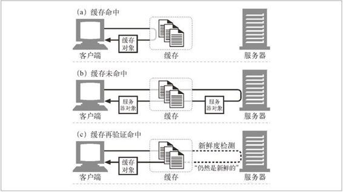
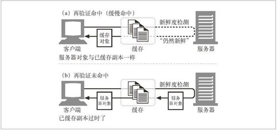
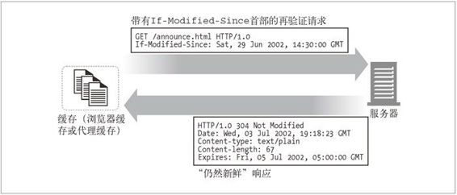

7.5 命中和未命中的
这样看来缓存是有所帮助的。但缓存无法保存世界上每份文档的副本。1
1 几乎没人能够买得起一个大得足以装下 Web 上所有文档的缓存。即便可以买得起巨大的“整个 Web 的缓存”，有些文档也经常会发生变化，很多缓存中的内容都不是最新的。这样的话，在很多缓存中都无法对其进行及时的更新。
可以用已有的副本为某些到达缓存的请求提供服务。这被称为缓存命中（cache hit），参见图 7-4a。其他一些到达缓存的请求可能会由于没有副本可用，而被转发 给原始服务器。这被称为缓存未命中（cache miss），参见图 7-4b。

图 7-4 缓存命中、未命中以及再验证
7.5.1 再验证
原始服务器的内容可能会发生变化，缓存要不时对其进行检测，看看它们保存的副本是否仍是服务器上最新的副本。这些“新鲜度检测”被称为 HTTP 再验证（revalidation）（参见图 7-4c）。为了有效地进行再验证，HTTP 定义了一些特殊的请求，不用从服务器上获取整个对象，就可以快速检测出内容是否是最新的。
缓存可以在任意时刻，以任意的频率对副本进行再验证。但由于缓存中通常会包含数百万的文档，而且网络带宽是很珍贵的，所以大部分缓存只有在客户端发起请求，并且副本旧得足以需要检测的时候，才会对副本进行再验证。本章稍后会解释 HTTP 的新鲜度检测规则。
缓存对缓存的副本进行再验证时，会向原始服务器发送一个小的再验证请求。如果内容没有变化，服务器会以一个小的 304 Not Modified 进行响应。只要缓存知道副本仍然有效，就会再次将副本标识为暂时新鲜的，并将副本提供给客户端（参见图 7-5a）这被称作再验证命中（revalidate hit）或缓慢命中（slow hit）。这种方式确实要与原始服务器进行核对，所以会比单纯的缓存命中要慢，但它没有从服务器中获取对象数据，所以要比缓存未命中快一些。

图 7-5 成功的再验证比缓存未命中要快，失败的再验证几乎和未命中的速度一样
HTTP 为我们提供了几个用来对已缓存对象进行再验证的工具，但最常用的是 If-Modified-Since 首部。将这个首部添加到 GET 请求中去，就可以告诉服务器，只有在缓存了对象的副本之后，又对其进行了修改的情况下，才发送此对象。
这里列出了在 3 种情况下（服务器内容未被修改，服务器内容已被修改，或者服务器上的对象被删除了）服务器收到 GET If-Modified-Since 请求时会发生的情况：
再验证命中
如果服务器对象未被修改，服务器会向客户端发送一个小的 HTTP 304 Not Modified 响应。图 7-6 对此进行了描述。

图 7-6 HTTP 使用 If-Modified-Since 首部进行再验证
再验证未命中
如果服务器对象与已缓存副本不同，服务器向客户端发送一条普通的、带有完整内容的 HTTP 200 OK 响应。
对象被删除
如果服务器对象已经被删除了，服务器就回送一个 404 Not Found 响应，缓存也会将其副本删除。
7.5.2 命中率
由缓存提供服务的请求所占的比例被称为缓存命中率（cache hit rate，或称为缓存命中比例），2 有时也被称为文档命中率（document hit rate）。命中率在 0 到 1 之间，但通常是用百分数来描述的，0% 表示每次请求都未命中（要通过网络来获取文档），100% 表示每次请求都命中了（在缓存中有一份副本）。3
2 术语“命中比例”可能比“命中率”要好，因为“命中率”会让人错误地想到时间因素。但是“命中率”这个词很常用，所以这里我们也使用它。
3 有时，人们会在命中率中包括再验证命中，但有时候命中率和再验证命中率是分别测量的。在检测命中率的时候，要确定自己知道什么才是“命中”。
缓存的管理者希望缓存命中率接近 100%。而实际得到的命中率则与缓存的大小、缓存用户兴趣点的相似性、缓存数据的变化或个性化频率，以及如何配置缓存有关。命中率很难预测，但对现在中等规模的 Web 缓存来说，40% 的命中率是很合理的。缓存的好处是，即使是中等规模的缓存，其所包含的常见文档也足以显著地提高性能、减少流量了。缓存会努力确保将有用的内容保存在缓存中。
7.5.3 字节命中率
由于文档并不全是同一尺寸的，所以文档命中率并不能说明一切。有些大型对象被访问的次数可能较少，但由于尺寸的原因，对整个数据流量的贡献却更大。因此，有些人更愿意使用字节命中率（byte hit rate）作为度量值（尤其那些按流量字节付费的人！）。
字节命中率表示的是缓存提供的字节在传输的所有字节中所占的比例。通过这种度量方式，可以得知节省流量的程度。100% 的字节命中率说明每个字节都来自缓存，没有流量流到因特网上去。
文档命中率和字节命中率对缓存性能的评估都是很有用的。文档命中率说明阻止了多少通往外部网络的 Web 事务。事务有一个通常都很大的固定时间成分（比如，建立一条到服务器的 TCP 连接），提高文档命中率对降低整体延迟（时延）很有好处。字节命中率说明阻止了多少字节传向因特网。提高字节命中率对节省带宽很有利。
7.5.4 区分命中和未命中的情况
不幸的是，HTTP 没有为用户提供一种手段来区分响应是缓存命中的，还是访问原始服务器得到的。在这两种情况下，响应码都是 200 OK，说明响应有主体部分。有些商业代理缓存会在 Via 首部附加一些额外信息，以描述缓存中发生的情况。
客户端有一种方法可以判断响应是否来自缓存，就是使用 Date 首部。将响应中 Date 首部的值与当前时间进行比较，如果响应中的日期值比较早，客户端通常就可以认为这是一条缓存的响应。客户端也可以通过 Age 首部来检测缓存的响应，通过这个首部可以分辨出这条响应的使用期（参见附录 C 中的 Age 首部）。